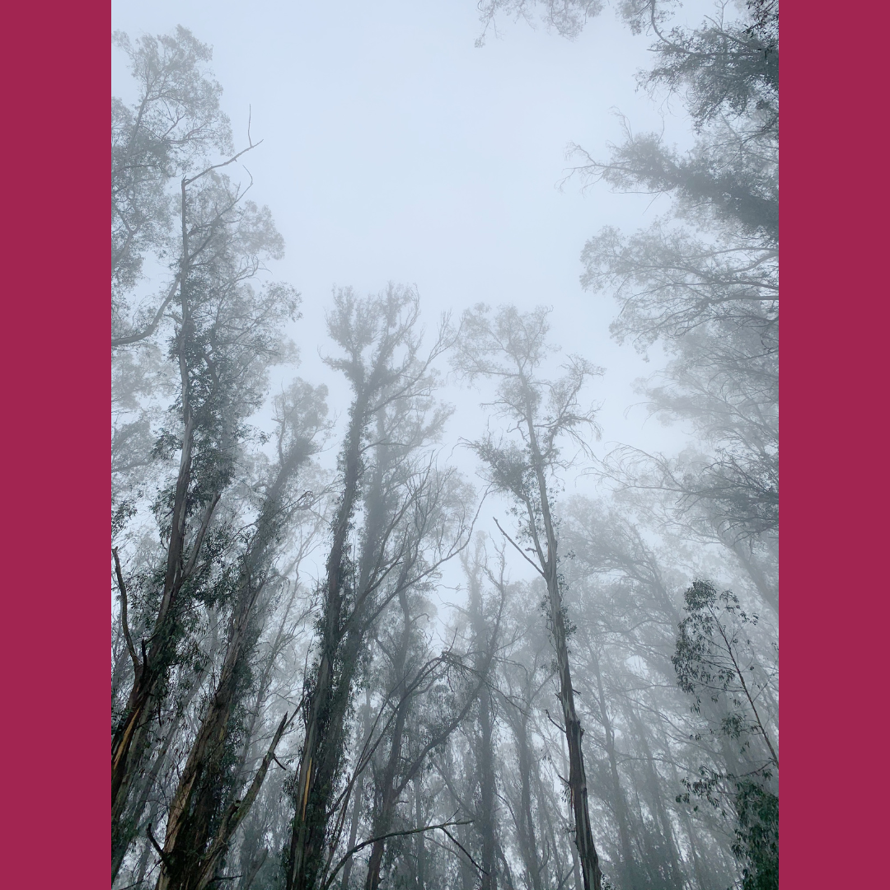

Inspiration Everywhere
Memories often inspire my art. I usually begin painting after finding a reminder of my past. Little sketches or photographs act as a catalyst to a process of remembering. When I paint from memory, ideas begin to flow, and scenes emerge that are much more descriptive than what I could preserve in writing. Layer after layer, I use the canvas to develop my story and shape my past.

